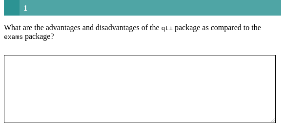

Minimum version
This is just a typical essay exercise. A template is available in
RStudio when you click on
New file -> R Markdown -> From Template. The qti
templates start with QTI:. Here we look at the templates
QTI: essay (simple) and
QTI: essay (complex).
The minimum you need to provide is the type: essay in
the yaml-section and some text as a task description in a section called
#question:
---
type: essay # type of exercise
knit: qti::render_qtijs # if you do not want our preview renderer, remove this
---
# question
What are the advantages and disadvantages of the `qti` package as compared to the `exams` package?
# feedback
The qti package can only export to the QTI format, which makes it less general than the `exams` package. But the qti package supports more exercise types, can preview xml files and has a very solid core architecture based on S4 OOP and many tests.Knitting via the Knit-Button to qtijs, this exercise renders as:

Alternatively, change the knit parameter to
knit: render_opal (see API
Opal) to upload to Opal directly, producing:

Note that in this example, a feedback section was also provided. Since an open question requires manual review, only general feedback without conditions should be provided. The feedback is optional, but usually it is a good idea to give some explanation for students. Furthermore, a feedback section for essay exercises can serve as a good basis for grading student’s answers.
More control
If you want to have more fine-grained control, consider the RMD
template QTI: essay (complex), wich uses more yaml
attributes.
---
type: essay # type of exercise
knit: qti::render_opal # if you do not want our preview renderer, remove this
identifier: TOPIC1_Q001 # think twice about this id for later data analysis!
title: A meaningful title that can be displayed in the LMS
expected_length: 30 # defines the width of the text input field
expected_lines: 3 # defines the number of lines of the text input field
words_max: 100 # how many words can be written in the text input field
words_min: 10 # the minimum number of words to send a response
data_allow_paste: false # whether the candidate is allowed to copy text from the clipboard
points: 2
---
# question
What are the advantages and disadvantages of the `qti` package as compared to the `exams` package?
# feedback
The qti package can only export to the QTI format, which makes it less general than the `exams` package. But the qti package supports more exercise types, can preview xml files and has a very solid core architecture based on S4 OOP and many tests.Which on Opal renders as:

yaml attributes
identifier
This is the ID of the exercise, useful for later data analysis of results. The default is the file name. If you are doing extensive data analysis later on it makes sense to specify a meaningful identifier. In all other cases, the file name should be fine.
title
Title of the exercise. Can be displayed to students depending on the learning management system settings. Default is the file name.
words_max
Defines the maximum number of words that can be written by the candidate in the text input field.
Feedback
Feedback can be provided with the section
- # feedback (general feedback, displayed every time, without conditions)
The feedback plays an important role in essay exercises because the expected length and maximum words are calculated from the feedback section, if one is given. Providing useful feedback also defines explicit criteria for grading, so do not skip it for essay exercises, unless you have good reasons to.
Some advice on essay exercises
Essay exercises can be one of the best exercises if the instructor asks a good question. Unfortunately, many instructors are not very creative and unspecific when they come up with essay questions. This often leads to vague criteria for grading. To avoid this, always write an ideal solution in the feedback section. Your students and colleagues will thank you.